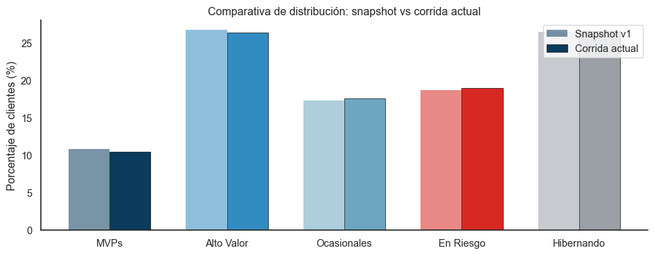

Código
import pandas as pd
import numpy as np
import matplotlib.pyplot as plt
import seaborn as sns
sns.set_theme(style="white")
SEGMENT_COLORS = {
"MVPs": "#0B3C5D",
"Alto Valor": "#328CC1",
"Ocasionales": "#6CA6C1",
"En Riesgo": "#D82822",
"Hibernando": "#9AA0A6",
}
# Snapshot original (v1) vs corridas posteriores con drift simulado
snapshot = {'MVPs': 10.8, 'Alto Valor': 26.7, 'Ocasionales': 17.3, 'En Riesgo': 18.7, 'Hibernando': 26.5}
corrida_hoy = {'MVPs': 10.4, 'Alto Valor': 26.4, 'Ocasionales': 17.6, 'En Riesgo': 19.0, 'Hibernando': 26.6}
df_drift = pd.DataFrame({
'Segmento': list(snapshot.keys()),
'Snapshot v1 (%)': list(snapshot.values()),
'Corrida actual (%)': list(corrida_hoy.values()),
})
df_drift['Diferencia (pp)'] = df_drift['Corrida actual (%)'] - df_drift['Snapshot v1 (%)']
fig, ax = plt.subplots(figsize=(10, 4))
x = np.arange(len(df_drift))
width = 0.35
colores_seg = [SEGMENT_COLORS[s] for s in df_drift['Segmento']]
ax.bar(x - width/2, df_drift['Snapshot v1 (%)'], width,
color=colores_seg, alpha=0.55, edgecolor='none', label='Snapshot v1')
ax.bar(x + width/2, df_drift['Corrida actual (%)'], width,
color=colores_seg, edgecolor='black', linewidth=0.5, label='Corrida actual')
ax.set_xticks(x)
ax.set_xticklabels(df_drift['Segmento'])
ax.set_ylabel("Porcentaje de clientes (%)")
ax.set_title("Comparativa de distribución: snapshot vs corrida actual")
ax.legend(loc='upper right')
ax.axhline(y=0, color='black', linewidth=0.5)
sns.despine()
plt.tight_layout()
plt.show()